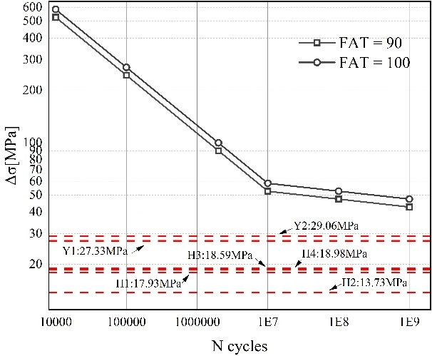
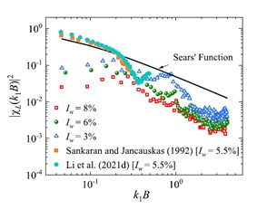

Research Projects

Wind-induced Risk Assessment of ETTLS under different Terrain
#Resilience #ExtremeWeather #CurrentWork
In this project, the vertical, single-point load force in the same direction as gravity is applied first. The force size is 100kN, and the stress value is calculated to determine the location of dangerous nodes. The method of determining dangerous node is mainly carried out from two aspects: static load and dynamic response stress amplitude.

Research on wind methods for Qingshuitang Bridge
#Resilience #ExtremeWeather #CurrentWork
In this project, the vertical, single-point load force in the same direction as gravity is applied first. The force size is 100kN, and the stress value is calculated to determine the location of dangerous nodes. The method of determining dangerous node is mainly carried out from two aspects: static load and dynamic response stress amplitude.

Effect of Turbulence Intensity on Unsteady Gust-loading
#WindTunnelTest #AerodynamicAdmittance #JWEIA
This study investigated the influence of turbulence intensity on the unsteady aerodynamic behavior of a 5:1 rectangular cylinder through wind tunnel experiments. It was found that turbulence intensity plays a dominant role in determining the lift 3D one-dimensional aerodynamic admittance (AAF), and an increase in turbulence intensity weakens the value of this admittance. The results have been published inJWEIA.

Reynolds Number Effects on 3D Aerodynamic Admittance
#MATLAB #PressureCharacteristics #FlowTopology
The influence of Reynolds number on the surface wind pressure characteristics of a 5:1 rectangular column was studied. By analyzing the experimental data, the relationship between the average suction peak and the vortex center, as well as the root mean square value of the fluctuating wind pressure and the reattachment point was revealed, providing a possibility for estimating the time-averaged flow topology through pressure characteristics.

Buffeting Response of Super-long Span Suspension Bridges
#ANSYS #NonlinearAnalysis #ExcellentThesis
A finite element model was established based on a 2300-meter-long suspension bridge, and nonlinear static analysis and prestressed modal analysis were conducted to verify the practicality of the model. Meanwhile, an improved harmonic synthesis method was adopted to simulate the 3D buffeting wind field near the bridge. This project was awarded as an outstanding graduation thesis of Chongqing University in 2022.

Evaluation of Visual Comfort on Long-span Suspension Bridges Experiencing Vortex-induced Vibration
#Resilience #ExtremeWeather #CurrentWork
The VIV amplitudes and the visual comfort limits calculated based on this case study varying with VIV frequency, according to different standards. The VIV limit curves prescribed by different code show the similar trend. The VIV limits specified by code in the low-frequency range are higher than the visual comfort-based limits proposed base on this case study. When considering the VIV limits for long-span suspension bridge structures, it is necessary to specify more stringent vibration limits based on visual comfort.

Research on Fatigue Performance of Zhuzhou Qingshuitang Bridge
#Resilience #ExtremeWeather #CurrentWork
In this project, the vertical, single-point load force in the same direction as gravity is applied first. The force size is 100kN, and the stress value is calculated to determine the location of dangerous nodes. The method of determining dangerous node is mainly carried out from two aspects: static load and dynamic response stress amplitude.